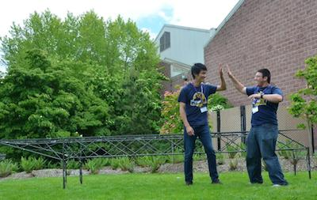
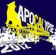
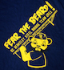
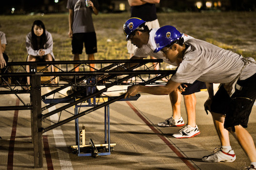
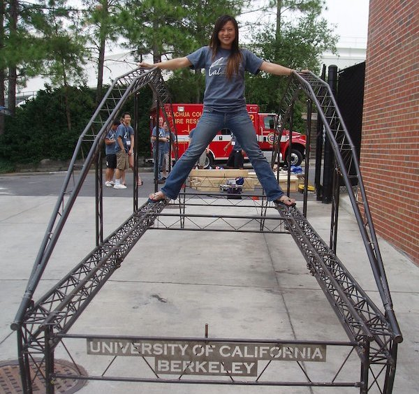
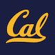
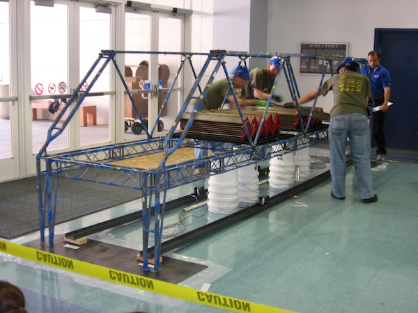

-
TyraniCal
1st place at Nationals
Project Manager: Fayad Rahman
 -

ApoCalypse
1st place at Nationals
Project Manager: Sabrina Odah
-

Fear the Beard
Competed at Nationals
Project Manager: Daniel Berson
 -
BEARicade
-
RadiCal
-
Calatrava
1st place at Nationals
Project Manager: Raman Bhatia
 -

UC Berkeley Steel Bridge Team
9th place at Nationals
Project Manager: Matt Vaggione
